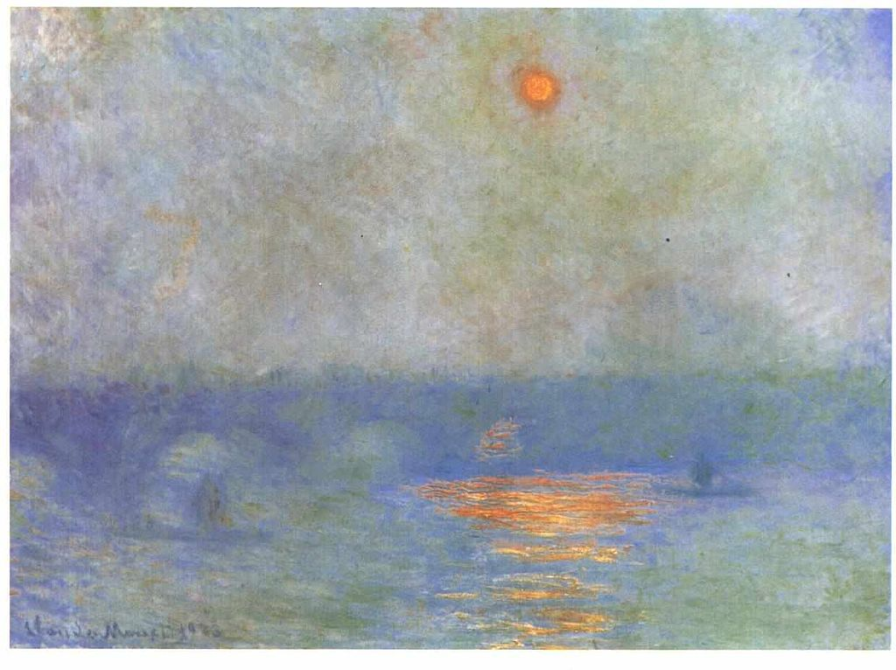

<head>
<meta charset="UTF-8" />
<meta name="keywords" content="drawing, painting" />
<meta name="description" content="drawings by Sunjy" />
<title>Sunjy</title>
<link rel="shortcut icon" type="image/x-icon" href="../../mImages/mCommon/favicon.ico" media="screen" />
<link rel="stylesheet" type="text/css" href="../../mCsses/mCommon/mCssA.css" />
<link rel="stylesheet" type="text/css" href="../../mCsses/mCommon/mCssB.css" />
<link rel="stylesheet" type="text/css" href="../../mCsses/mCommon/mCssC.css" />
<link rel="stylesheet" type="text/css" href="../../mCsses/mCommon/mCssD.css" />
<link rel="stylesheet" type="text/css" href="../../mCsses/mContent/mCssA.css" />
<link rel="stylesheet" type="text/css" href="../../mCsses/mContent/mCssB.css" />
<link rel="stylesheet" type="text/css" href="../../mCsses/mContent/mCssC.css" />
<link rel="stylesheet" type="text/css" href="../../mCsses/mContent/mCssD.css" />
</head>
<script type="text/javascript" src="../../mScripts/mContent/mContentAA.js" /></script>
<script type="text/javascript" src="../../mScripts/mContent/mContentAB.js" /></script>
<script type="text/javascript" src="../../mScripts/mContent/mContentAC.js" /></script>
<script type="text/javascript" src="../../mScripts/mContent/mContentAD.js" /></script>
<script type="text/javascript"></script> 
<script type="text/javascript">
document.write('<div class="mImgAbsolute"></div>');
/*
document.write('<p class="mFontSizeBColor" />From a white paper...</p>');
document.write('<table class="center"><tr><td>');
document.write('');
document.write('</td></tr></table>');
*/
</script>


<script type="text/javascript">
document.write('<p class="mFontSizeBColor" />Waterloo Bridge: the Sun in the Fog </p>');
document.write('<p class="mFontSizeSColor" />Waterloo Bridge: the Sun in the Fog by Claude Monet was one of the nearly a hundred views he produced of the Thames River in London. He painted the “Waterloo Bridge Series” and “Charing Cross Bridge” from his room in the Savoy Hotel and the Houses of Parliament from Saint Thomas’s Hospital.<br><br>The artist continued to refine the paintings and wrote to his dealer Durand-Ruel:<br><br>“I cannot send you a single canvas of London … It is indispensable to have them all before me and to tell the truth; not one is definitely finished. I develop them all together.” <br><br>Monet continued to work on all of his London paintings back in his studio in Giverny. He refused to send any of them to his dealer until he was satisfied with them as an ensemble.<br><br>While other painters would depict London as a drab and gray, Monet focused on how the fog changed colors depending on the light.<br><br> “The fog in London assumes all sorts of colors; there are black, brown, yellow, green, purple fogs, and the interest in painting is to get the objects as seen through these fogs.” – Monet<br><br>X-radiography has revealed that this painting initially included towers and belching smokestacks on the far bank. Monet dissolved the original industrial landscape, focusing instead on light and the “ghostly magnificence of London.”<br><br>Not all of urban life has been erased, traffic continues on the bridge, and in the water as the fog-cloaked glow of the sun pervades the scene.<br></p>');
document.write('<table class="center" /><tr><td>');
document.write('<br>The artist continued to refine the paintings and wrote to his dealer Durand-Ruel:<br><br>“I cannot send you a single canvas of London … It is indispensable to have them all before me and to tell the truth; not one is definitely finished. I develop them all together.” <br><br>Monet continued to work on all of his London paintings back in his studio in Giverny. He refused to send any of them to his dealer until he was satisfied with them as an ensemble.<br><br>While other painters would depict London as a drab and gray, Monet focused on how the fog changed colors depending on the light.<br><br> “The fog in London assumes all sorts of colors; there are black, brown, yellow, green, purple fogs, and the interest in painting is to get the objects as seen through these fogs.” – Monet<br><br>X-radiography has revealed that this painting initially included towers and belching smokestacks on the far bank. Monet dissolved the original industrial landscape, focusing instead on light and the “ghostly magnificence of London.”<br><br>Not all of urban life has been erased, traffic continues on the bridge, and in the water as the fog-cloaked glow of the sun pervades the scene.<br>" />');
document.write('</td></tr></table>');
</script>


